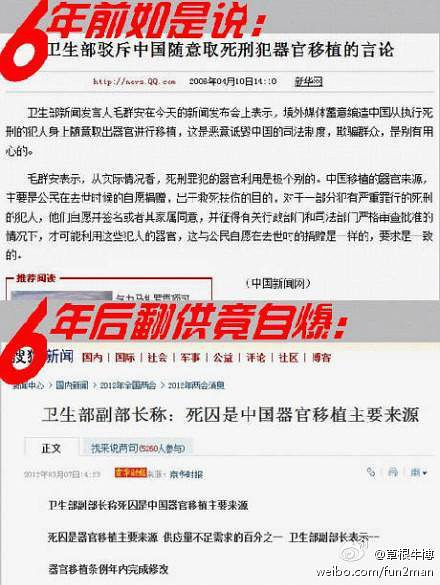

前几天有读者在博客留言，询问“双重思想”相关话题。俺回复之后，另一个读者抱怨俺的回复太简单了。所以今天就“双重思想”这个话题，单独聊一聊。
开博几年来，也发了些揭露真理部篡改历史的博文（比如：这里、这里、这里）。所谓的“篡改历史”，其本质就是“欺骗”。但是有一种洗脑手法比欺骗更有效，更彻底，那就是思维控制。今天来聊聊思维控制的手法之一“塑造双重思想”。
所谓的“思维控制”就是采用某些手段来改变（弱化）你的思维能力。这里所说的“思维能力”广义的，也包括“记忆力”。
一旦思维能力被降低，洗脑者就很容易把你玩弄于股掌之中。
“欺骗”这个手法本身有不少弊端：
其一，要把谎话说圆本身就有一定的难度。一旦被洗脑的人发现了谎话中的破绽（比如谎话中的自相矛盾），这招数就露馅了。
其二，即使谎话本身没有破绽，但是被洗脑的人有可能通过其它途径（比如翻墙）从不同的信息来源获取信息，从而发现官方的宣传与境外的宣传不一致。
而“思维控制”就可以避免上述弊端。“思维控制”的精华在于——破坏你的思维能力。当一个人的思维能力被彻底摧毁，此人就如同洗脑者手中的木偶，可以被任意操控。
说到思维控制，不得不提《一九八四》这本伟大的著作（说此书“伟大”毫不夸张）。作者奥威尔用通俗的手法（科幻小说的形式）揭露了极权主义最本质最黑暗的一面。在这些阴暗面中就有“洗脑术”，尤其是基于“思想控制”的洗脑术。（有些同学不晓得啥是“极权主义”，俺稍微提示一下：人类历史上祸害最广的前三个极权主义政权分别是：希特勒政权、斯大林政权、毛泽东政权）
《一九八四》里面重点提到了两种思维控制的方法，最牛逼的是“语言改造”，次牛逼的是“双重思想”（两者都是《1984》率先总结出来的，再次感叹作者奥威尔的目光独到）。“语言改造”虽然最牛逼，但实施的难度很大——至少需要消耗几代人的时间。所以到目前为止，即便像北朝鲜这种祖传三代的极权国家，都没能够彻底完成语言改造。相对而言，“双重思想”已经被很多专制政权拿来洗脑。所以普及“双重思想”更有现实意义。
（对《一九八四》感兴趣的同学，可以到俺的网盘上下载电子版）
所谓的“双重思想”，简单地说就是：“同时接受两种相反的、抵触的信念，却不觉得矛盾”。光这么说太过简单，估计列位看官印象不深。俺先举个例子：
“从来就没有救治主”（出自《国际歌》——共产党的党歌）
“他是人民的大救星”（出自《东方红》——文革那会儿巨流行的）
这两句话从逻辑的角度来看，是矛盾的。稍微有点逻辑的人，不应该同时相信这两个命题。但是文革时期的大多数人（包括如今的一些毛粉）并不觉得这两个命题有矛盾。在他们看来，这两句话都对，同时成立。这些两者全信的人就属于“拥有双重思想”。
这类自相矛盾的洗脑宣传，随便就能举一大堆：
一边说中华民族是最伟大、最优秀的民族；一边说中国人的素质太低，不适合民主。
一边说全国人民代表大会是最高权力机关；一边说全国人大也必须置于党的领导下。
一边说枪杆子里出政权，一边说革命解决不了问题。
（下面这张是卫生部对“死囚器官移植”的自相矛盾）
 ......
不光是党国有这种自相矛盾，民间人士也有。给大伙儿看张图（凤凰网在911十周年的街头采访视频）。
如果你看到上述这些论调，不觉得矛盾，不觉得困惑。恭喜你，你很可能被朝廷改造成“双重思想”了。
下面引用《一九八四》中关于“双重思想”的描述，大伙儿再体会一下：
初级的洗脑手法（比如“欺骗”）主要是用来对付被统治的民众。但“双重思想”不同，它不但可以用来对付民众，还可以用于体制内。
比方说某个官员要篡改大饥荒的死亡人数。他/她如果是有意识地做这个事情（意识到自己是在篡改），会面临内心的负罪感/愧疚感，无法做到理直气壮；他/她如果是无意识地做这个事情，因为是“无意识”，做出来的伪造数据就不够真实，缺乏欺骗性。为了同时达到上述两种目的，这个官员必须具有双重思想。有了双重思想之后，既可以在篡改历史的时候理直气壮，又可以做到篡改的精确性。
双重思想不但可以用在普通官员身上，甚至可以用于统治集团的领导层。请看《一九八四》的如下论述：
双重思想的程度是有深有浅滴。假如某个民众的头脑被深深地打上“双重思想”的烙印，他/她就彻底变成朝廷的奴隶。对这种人而言，不论朝廷说啥（即使朝廷说的话自相矛盾），他/她都深信不疑——这就是传说中的“深度脑残”。
在小说《1984》中有一个形象的说法：假如某一天，党宣布2+2=5，双重思想者也会立即接受并深信不疑。
关于这话题，《1984》提到说，要在儿童时期进行“内心纪律训练”，具体包括两个阶段：“犯罪停止”（crimestop）和“黑白”（blackwhite）。为了偷懒，引述《1984》的原话如下：
刚才看了某网友的留言，顺便补充这一节。
俺不止一次提到说：天朝的洗脑教育和正常教育之间的差异是：正常教育重在【引导】，而天朝的教育重在【灌输】。“灌输”就是一种培训双重思想的有效手段，其妙处至少有两个：
首先，灌输的过程中，学生无需思考，只需动用记忆力。这就剥夺了你锻炼思维能力的机会；
其次，灌输给你的信息如果本身就是自相矛盾的，你必然会慢慢养成“双重思想”。
还有，即使你内心清醒，知道官方的教育是洗脑，但你为了通过考试（尤其是政治考试），你不得不去背那些荒谬的洗脑内容。久而久之，也还是会形成“双重思想”。
俺觉得：光靠这两个童年时期的心灵改造，是不够滴。到了成人之后，必须采用手段巩固民众的双重思想。要巩固双重思想，就要继续摧毁人的逻辑思维；要摧毁逻辑思维，办法之一就是：强化感性，淡化理性。要强化感性，心理学上最有效的两个手段就是：“诉诸恐惧”和“诉诸仇恨”。
诉诸恐惧
俺推荐的经典影片《V怪客》里面有句名言：【制造恐惧是专制政府的终极武器】。比如很多五毛经常忽悠说：搞民主会天下大乱。这就是典型的“诉诸恐惧”。另外，朝廷几十年来经常宣传的“帝国主义忘我之心不死”也属于“诉诸恐惧”。
根据心理学的研究，诉诸恐惧是非常有效滴（考虑到篇幅，暂且不谈具体的心理学机制）。当某人被恐惧所笼罩，往往方寸大乱，再也顾不上理性的思考。顺便说一下，“诉诸恐惧”不但经常用于政治领域，也是经济领域的管用手法。所以巴菲特有句名言：当别人贪婪时恐惧，当别人恐惧时贪婪。涉足投资领域的同学应该好好体会巴菲特这句话的深意。
诉诸仇恨
和“诉诸恐惧”类似的另一个招数是“诉诸仇恨”。当一个人非常愤怒时，往往也会削弱其理性思维的能力。比如最近20年，天朝刻意煽动对日本的仇恨——钓鱼岛被反复拿出来说事儿。如果朝廷真的是寸土必争，那怎么从来不提如下这些边境纠纷？
藏南（中印边界）约7万平方公里
江心坡（中缅未定界北段）约2万7千平方公里
江东六十四屯（中俄边界）约3600平方公里
......
（关于更多的领土纠纷，可以看俺3年前的帖子《谁是最可恨的人？——写给仇日愤青们》）
从上述对比可以看出，朝廷并不是寸土必争。所以钓鱼岛只是一个借口，一个G点。通过这个G点可以煽动足够多狭隘的民族主义者。
看看下面这些被煽动的爱国愤青，你就能体会到朝廷的“诉诸愤怒”，效果有多好。
最后再来抹黑一下“辩证法”。这玩意儿在党国的正统理论体系中很是吃香，被抬到很高的高度。为啥党国的理论体系如此强调“辩证法”？原因有很多。其中之一就是：辩证法有利于培训“双重思想”。因为写到这里，篇幅已经比较长了，俺就不多费口水批辩证法了，直接给出俺2年前的一篇博文《每周转载：关于辩证法（网文3篇）》。其中的那篇《辩证法与放屁》不但搞笑而且入木三分。
俺博客上，和本文相关的帖子（需翻墙）：
《书评：＜一九八四＞——反乌托邦的代表作》
《聊聊洗脑和脑残——分析“脑残的起源”和“脑残的觉醒”》
《比“欺骗”更狡猾的洗脑——基于【真实数据】进行忽悠》
《批判性思维扫盲：学会区分“事实”与“观点”》
《看看真理部是如何 PS 照片的》
《每周转载：关于辩证法（网文3篇）》
《谈谈真理部对朝鲜战争的忽悠》
《谈谈真理部对抗战历史的篡改》
《天朝民众的心理分析：圣君情结》
《天朝民众的心理分析：斯德哥尔摩综合症》
开博几年来，也发了些揭露真理部篡改历史的博文（比如：这里、这里、这里）。所谓的“篡改历史”，其本质就是“欺骗”。但是有一种洗脑手法比欺骗更有效，更彻底，那就是思维控制。今天来聊聊思维控制的手法之一“塑造双重思想”。
★啥是“思维控制”
所谓的“思维控制”就是采用某些手段来改变（弱化）你的思维能力。这里所说的“思维能力”广义的，也包括“记忆力”。
一旦思维能力被降低，洗脑者就很容易把你玩弄于股掌之中。
★为啥“思维控制”比“欺骗”更有效？
“欺骗”这个手法本身有不少弊端：
其一，要把谎话说圆本身就有一定的难度。一旦被洗脑的人发现了谎话中的破绽（比如谎话中的自相矛盾），这招数就露馅了。
其二，即使谎话本身没有破绽，但是被洗脑的人有可能通过其它途径（比如翻墙）从不同的信息来源获取信息，从而发现官方的宣传与境外的宣传不一致。
而“思维控制”就可以避免上述弊端。“思维控制”的精华在于——破坏你的思维能力。当一个人的思维能力被彻底摧毁，此人就如同洗脑者手中的木偶，可以被任意操控。
说到思维控制，不得不提《一九八四》这本伟大的著作（说此书“伟大”毫不夸张）。作者奥威尔用通俗的手法（科幻小说的形式）揭露了极权主义最本质最黑暗的一面。在这些阴暗面中就有“洗脑术”，尤其是基于“思想控制”的洗脑术。（有些同学不晓得啥是“极权主义”，俺稍微提示一下：人类历史上祸害最广的前三个极权主义政权分别是：希特勒政权、斯大林政权、毛泽东政权）
《一九八四》里面重点提到了两种思维控制的方法，最牛逼的是“语言改造”，次牛逼的是“双重思想”（两者都是《1984》率先总结出来的，再次感叹作者奥威尔的目光独到）。“语言改造”虽然最牛逼，但实施的难度很大——至少需要消耗几代人的时间。所以到目前为止，即便像北朝鲜这种祖传三代的极权国家，都没能够彻底完成语言改造。相对而言，“双重思想”已经被很多专制政权拿来洗脑。所以普及“双重思想”更有现实意义。
（对《一九八四》感兴趣的同学，可以到俺的网盘上下载电子版）
★啥是“双重思想”？
所谓的“双重思想”，简单地说就是：“同时接受两种相反的、抵触的信念，却不觉得矛盾”。光这么说太过简单，估计列位看官印象不深。俺先举个例子：
“从来就没有救治主”（出自《国际歌》——共产党的党歌）
“他是人民的大救星”（出自《东方红》——文革那会儿巨流行的）
这两句话从逻辑的角度来看，是矛盾的。稍微有点逻辑的人，不应该同时相信这两个命题。但是文革时期的大多数人（包括如今的一些毛粉）并不觉得这两个命题有矛盾。在他们看来，这两句话都对，同时成立。这些两者全信的人就属于“拥有双重思想”。
这类自相矛盾的洗脑宣传，随便就能举一大堆：
一边说中华民族是最伟大、最优秀的民族；一边说中国人的素质太低，不适合民主。
一边说全国人民代表大会是最高权力机关；一边说全国人大也必须置于党的领导下。
一边说枪杆子里出政权，一边说革命解决不了问题。
（下面这张是卫生部对“死囚器官移植”的自相矛盾）
不光是党国有这种自相矛盾，民间人士也有。给大伙儿看张图（凤凰网在911十周年的街头采访视频）。
如果你看到上述这些论调，不觉得矛盾，不觉得困惑。恭喜你，你很可能被朝廷改造成“双重思想”了。
下面引用《一九八四》中关于“双重思想”的描述，大伙儿再体会一下：
知与不知，知道全部真实情况而却扯些滴水不漏的谎话，同时持两种互相抵消的观点，明知它们互相矛盾而仍都相信，用逻辑来反逻辑，一边表示拥护道德一边又否定道德，一边相信民主是办不到的一边又相信党是民主的捍卫者，忘掉一切必须忘掉的东西而又在需要的时候想起它来，然后又马上忘掉它，而尤其是，把这样的做法应用到做法本身上面——这可谓绝妙透顶了：有意识地进入无意识，而后又并不意识到你刚才完成的催眠。即使要了解“双重思想”的含义你也得使用双重思想。
★谈谈“双重思想”的亮点
◇亮点1：既可用于洗脑民众，也可以用于体制的维护者
初级的洗脑手法（比如“欺骗”）主要是用来对付被统治的民众。但“双重思想”不同，它不但可以用来对付民众，还可以用于体制内。
比方说某个官员要篡改大饥荒的死亡人数。他/她如果是有意识地做这个事情（意识到自己是在篡改），会面临内心的负罪感/愧疚感，无法做到理直气壮；他/她如果是无意识地做这个事情，因为是“无意识”，做出来的伪造数据就不够真实，缺乏欺骗性。为了同时达到上述两种目的，这个官员必须具有双重思想。有了双重思想之后，既可以在篡改历史的时候理直气壮，又可以做到篡改的精确性。
双重思想不但可以用在普通官员身上，甚至可以用于统治集团的领导层。请看《一九八四》的如下论述：
过去所有的寡头政体之所以丧失权力，或者是由于自己僵化，或者是由于软化。
所谓僵化，就是它们变得愚蠢和狂妄起来，不能适应客观情况的变化，因而被推翻掉。所谓软化，就是它们变得开明和胆怯起来，在应该使用武力的时候却作了让步，因此也被推翻掉了。
那就是说，它们丧失权力或者是通过自觉，或者是通过不自觉。而党的成就是，它实行了一种思想制度，能够使两种情况同时并存。党的统治要保持长久不衰，不需要任何其他的思想基础。你要统治，而且要继续统治，你就必须要能够打乱现实的意识。因为统治的秘诀就是把“相信自已的一贯正确”同“从过去的错误汲取教训的能力”结合起来。
◇亮点2：对民众可以做到非常彻底的控制
双重思想的程度是有深有浅滴。假如某个民众的头脑被深深地打上“双重思想”的烙印，他/她就彻底变成朝廷的奴隶。对这种人而言，不论朝廷说啥（即使朝廷说的话自相矛盾），他/她都深信不疑——这就是传说中的“深度脑残”。
在小说《1984》中有一个形象的说法：假如某一天，党宣布2+2=5，双重思想者也会立即接受并深信不疑。
★如何造就“双重思想”？
关于这话题，《1984》提到说，要在儿童时期进行“内心纪律训练”，具体包括两个阶段：“犯罪停止”（crimestop）和“黑白”（blackwhite）。为了偷懒，引述《1984》的原话如下：
◇犯罪停止（crimestop）
至于可能引起怀疑或造反倾向的思想，则用他早期受到的内心纪律训练而事先就加以扼杀了。这种训练的最初和最简单的一个阶段，新话叫做犯罪停止（crimestop），在孩子们很小的时候就可以进行（编程随想注：“新话”是小说中党设计的新语言，用于“语言改造”）。犯罪停止（crimestop）的意思就是指在产生任何危险思想之前出于本能地悬崖勒马的能力。
这种能力还包括不能理解类比，不能看到逻辑错误，不能正确了解与党的原则不一致的最简单论点、对于任何可以朝异端方向发展的思路感到厌倦、厌恶。
总而言之，犯罪停止（crimestop）意味着起保护作用的愚蠢。
◇黑白（blackwhite）
但光是愚蠢还不够，还要保持充分正统，这就要求对自己的思维过程能加以控制，就象表演柔软体操的杂技演
员控制自己身体一样。大洋国社会的根本信念是，老大哥全能，党一贯正确。但由于在现实生活中老大哥并不全能，党也并不一贯正确。这就需要在处理事实时要始终不懈地、时时刻刻地保持灵活性。这方面的一个关键字眼是黑白（blackwhite）。这个字眼象新话中的许多其他字眼一样，有两个相互矛盾的含义。
用在对方身上，这意味着不顾明显事实硬说黑就是白的无耻习惯。用在党员身上，这意味着在党的纪律要求你说黑就是白时，你就有这样自觉的忠诚。但这也意味着相信黑就是白的能力，甚至是知道黑就是白和忘掉过去曾经有过相反认识的能力。
◇补充一下天朝教育
刚才看了某网友的留言，顺便补充这一节。
俺不止一次提到说：天朝的洗脑教育和正常教育之间的差异是：正常教育重在【引导】，而天朝的教育重在【灌输】。“灌输”就是一种培训双重思想的有效手段，其妙处至少有两个：
首先，灌输的过程中，学生无需思考，只需动用记忆力。这就剥夺了你锻炼思维能力的机会；
其次，灌输给你的信息如果本身就是自相矛盾的，你必然会慢慢养成“双重思想”。
还有，即使你内心清醒，知道官方的教育是洗脑，但你为了通过考试（尤其是政治考试），你不得不去背那些荒谬的洗脑内容。久而久之，也还是会形成“双重思想”。
◇强化感性思维，淡化理性思维
俺觉得：光靠这两个童年时期的心灵改造，是不够滴。到了成人之后，必须采用手段巩固民众的双重思想。要巩固双重思想，就要继续摧毁人的逻辑思维；要摧毁逻辑思维，办法之一就是：强化感性，淡化理性。要强化感性，心理学上最有效的两个手段就是：“诉诸恐惧”和“诉诸仇恨”。
诉诸恐惧
俺推荐的经典影片《V怪客》里面有句名言：【制造恐惧是专制政府的终极武器】。比如很多五毛经常忽悠说：搞民主会天下大乱。这就是典型的“诉诸恐惧”。另外，朝廷几十年来经常宣传的“帝国主义忘我之心不死”也属于“诉诸恐惧”。
根据心理学的研究，诉诸恐惧是非常有效滴（考虑到篇幅，暂且不谈具体的心理学机制）。当某人被恐惧所笼罩，往往方寸大乱，再也顾不上理性的思考。顺便说一下，“诉诸恐惧”不但经常用于政治领域，也是经济领域的管用手法。所以巴菲特有句名言：当别人贪婪时恐惧，当别人恐惧时贪婪。涉足投资领域的同学应该好好体会巴菲特这句话的深意。
诉诸仇恨
和“诉诸恐惧”类似的另一个招数是“诉诸仇恨”。当一个人非常愤怒时，往往也会削弱其理性思维的能力。比如最近20年，天朝刻意煽动对日本的仇恨——钓鱼岛被反复拿出来说事儿。如果朝廷真的是寸土必争，那怎么从来不提如下这些边境纠纷？
藏南（中印边界）约7万平方公里
江心坡（中缅未定界北段）约2万7千平方公里
江东六十四屯（中俄边界）约3600平方公里
......
（关于更多的领土纠纷，可以看俺3年前的帖子《谁是最可恨的人？——写给仇日愤青们》）
从上述对比可以看出，朝廷并不是寸土必争。所以钓鱼岛只是一个借口，一个G点。通过这个G点可以煽动足够多狭隘的民族主义者。
看看下面这些被煽动的爱国愤青，你就能体会到朝廷的“诉诸愤怒”，效果有多好。
◇辩证法
最后再来抹黑一下“辩证法”。这玩意儿在党国的正统理论体系中很是吃香，被抬到很高的高度。为啥党国的理论体系如此强调“辩证法”？原因有很多。其中之一就是：辩证法有利于培训“双重思想”。因为写到这里，篇幅已经比较长了，俺就不多费口水批辩证法了，直接给出俺2年前的一篇博文《每周转载：关于辩证法（网文3篇）》。其中的那篇《辩证法与放屁》不但搞笑而且入木三分。
俺博客上，和本文相关的帖子（需翻墙）：
《书评：＜一九八四＞——反乌托邦的代表作》
《聊聊洗脑和脑残——分析“脑残的起源”和“脑残的觉醒”》
《比“欺骗”更狡猾的洗脑——基于【真实数据】进行忽悠》
《批判性思维扫盲：学会区分“事实”与“观点”》
《看看真理部是如何 PS 照片的》
《每周转载：关于辩证法（网文3篇）》
《谈谈真理部对朝鲜战争的忽悠》
《谈谈真理部对抗战历史的篡改》
《天朝民众的心理分析：圣君情结》
《天朝民众的心理分析：斯德哥尔摩综合症》
版权声明
本博客所有的原创文章，作者皆保留版权。转载必须包含本声明，保持本文完整，并以超链接形式注明作者编程随想和本文原始地址：
https://program-think.blogspot.com/2014/01/doublethink.html
本博客所有的原创文章，作者皆保留版权。转载必须包含本声明，保持本文完整，并以超链接形式注明作者编程随想和本文原始地址：
https://program-think.blogspot.com/2014/01/doublethink.html